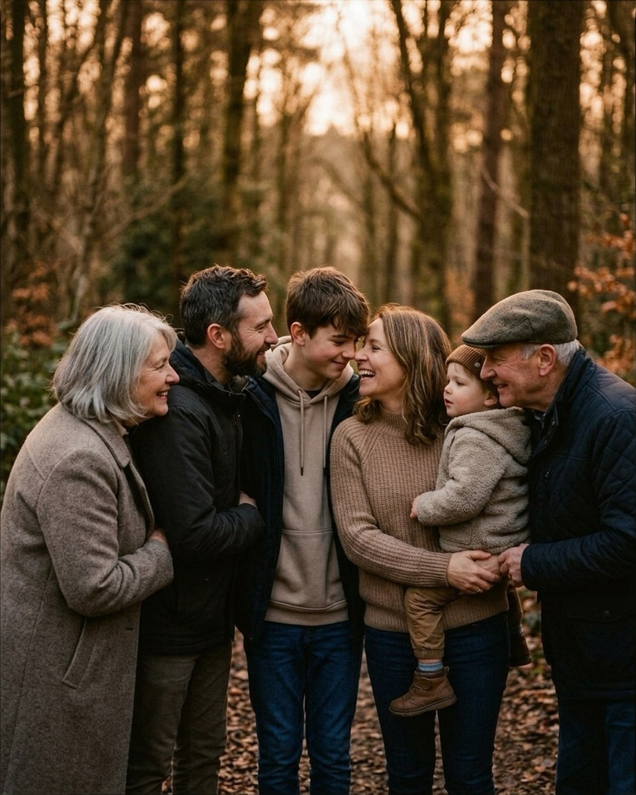
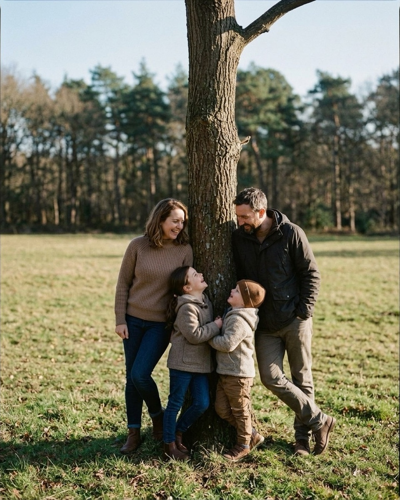
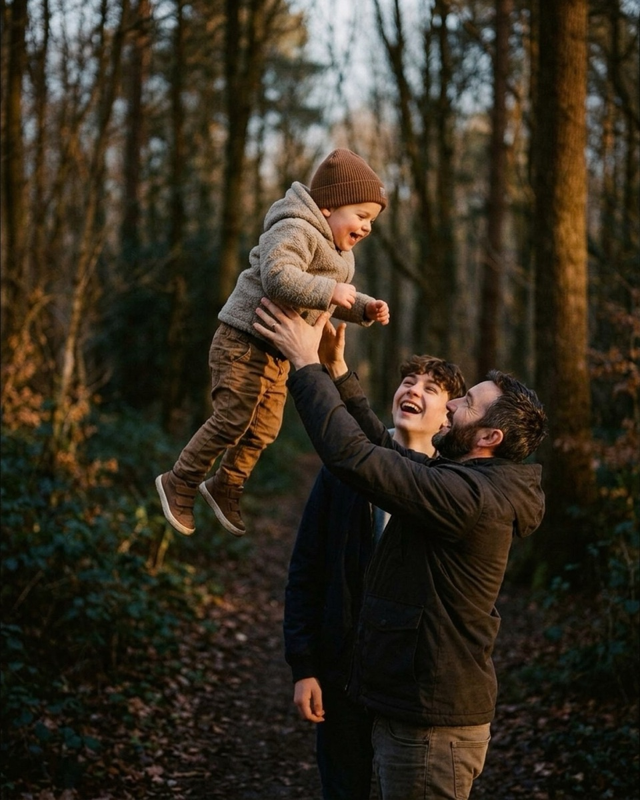
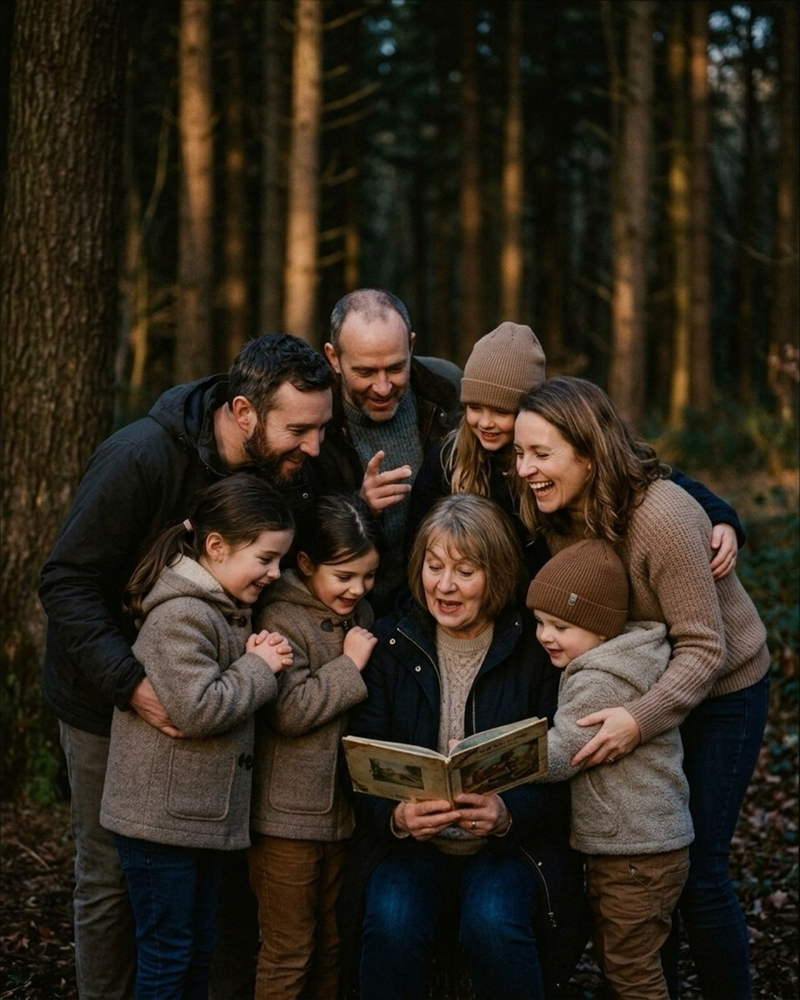

Fall family photo poses that work in real light
Nine setups for fields and forest edges, grouped by the light you'll actually be standing in: low golden sun, flat overcast, and backlit through the trees.
Fall light does not behave like summer light. The sun sits lower for more of the day, which means the golden window stretches longer but also means overcast days turn flat and gray faster, and by mid-afternoon a clear sky is already throwing long, warm, backlit shadows through bare branches. None of that is a problem if the poses you reach for are built around it instead of fighting it. The nine setups below come from fields and forest edges — the two locations where fall color actually shows up — and they're grouped by the light you're most likely to be standing in when you shoot them: golden low sun, flat overcast, and backlit through trees. Every reference image here is AI-generated, not a photograph of a real family; the catalog doesn't have real fall field-and-forest frames yet, and closing that gap is exactly what the contributor program exists for. What's real is the instruction behind each pose and every prompt, quoted exactly as it appears in the app. Say the words as written — that's the part that isn't a placeholder.
Golden hour and low sun
Fall's real gift is that "golden hour" stops being forty rushed minutes and becomes most of the late afternoon. The sun sits low enough, long enough, that you can actually block a pose, reset it, and shoot it again before the light changes character. These three lean into that low angle rather than fighting it — everyone's face catches warm side light instead of squinting into overhead sun.
Piggyback parade, field

Walk the parents side by side toward the camera across open field — mother on the left, father on the right — each carrying a child piggyback. The younger boy rides the mother, arms around her shoulders; the older daughter rides the father, arms around his neck and chest. Let both kids' legs dangle naturally against their parent's hips rather than gripping rigid. Keep the family moving at a real, unhurried walking pace instead of freezing mid-step; low fall sun raking across the field from the side is what turns an ordinary walk into a warm, dimensional frame instead of a flat one. Shoot a few passes rather than one perfect take — a piggyback ride only stays comfortable for so long before someone asks to be put down.
Mom, Dad — look at each other. The kids will do the rest, I promise.
Nervous clientFrom the pose "Piggyback parade field"
Use this the moment the parents start performing for the lens instead of walking naturally together — it gives them one easy, low-stakes job.
Give the little one a countdown, then launch. I'll be ready.
PlayfulFrom the pose "Piggyback parade field"
Fire this right before the kids climb on, so the moment of hoisting them up — usually a burst of laughing and scrambling — happens on your side of the shutter instead of before you're ready.
Nose boop line, forest

Pack the whole extended group into a tight, shallow semicircle facing inward, rather than a straight line facing the camera — teen son and mother anchor the center, grandmother and father to one side, grandfather leaning in from the other, and the toddler held on the mother's hip in the middle of it all. Everyone shoulder to shoulder, everyone's attention turned toward each other rather than the lens. This is a three-generation setup, which means patience runs out faster than usual; low golden sidelight through bare or thinning branches is forgiving here because it fills in the gaps between bodies with warmth instead of leaving anyone in shadow. If this group has been resistant to loosening up, the lines in 20 things to say to get natural smiles at a family session are built for exactly this kind of stiff, camera-conscious cluster.
We'll get one photo where everyone smiles at me for Grandma. Then we play. Deal?
Nervous clientFrom the pose "Nose boop line forest"
Say this up front with a three-generation group — it names the one obligatory shot everyone's bracing for, then explicitly releases them from posing after it's done.
Thumb war tournament. I'll photograph the drama.
PlayfulFrom the pose "Nose boop line forest"
Use this once the formal frame is captured and the group needs a reason to keep standing close together instead of drifting apart.
Ring around parents, field
Anchor the parents at the center in a loose embrace, facing each other, hands at each other's waist and back. Let everyone else orbit them: a grandfather stepping forward mid-stride, one girl running in from the left, another reaching across from the right, a boy laughing behind her, and the toddler wandering into the middle of it all with their back to the camera. Nobody needs to hold still — the pose is built on motion around a fixed center, which is easier to sustain in low fall light than a fully static group hold, since you're not asking six people to freeze at once. It's the same fixed-anchor logic covered in posing a family of five without it falling apart, just scaled up with orbiting bodies instead of a static lean. Shoot in continuous bursts as the ring closes in; the frame you want is usually a half-second before everyone actually arrives at the parents.
Swing the little one on every third step — one, two, wheee.
PlayfulFrom the pose "Ring around parents field"
Use this to give the person carrying the toddler a rhythm to move to, which keeps the whole orbiting group's motion loose instead of stiffly choreographed.
One quiet minute, all together. I'll take care of the rest.
CalmFrom the pose "Ring around parents field"
Good as a settling line before the motion starts, especially with a group this size — it buys you a beat to check focus and framing before everyone begins moving.
Want the fall mini session shot list?
About 25 poses grouped by family size, each with the words to say. Free PDF.
One email to confirm, one with the PDF. Unsubscribe any time.
Overcast
An overcast fall sky is the closest thing to a giant softbox you'll get outdoors, and it's common enough in October that it's worth planning for rather than treating as a loss. There's no direction to the light and no harsh shadow to manage, which means you can put a family on either side of a tree or in a loose semicircle without worrying about who's squinting and who's backlit. The trade-off is that the color needs to come from the leaves, not the sky — pick locations with strong fall foliage to compensate for the flat white overhead.
Tree line lean

Split the family around a single slender trunk — mother and young daughter on one side, father and young son on the other. Tuck both kids in tight against the front of the trunk, facing inward toward each other, hands near the bark, looking up into the canopy. Parents stand at the outer edges, angled inward, gazing down at the kids rather than at the camera. Overcast light is what makes this pose work at all: it lands evenly on both sides of the trunk at once, so neither parent goes into shadow while the other catches the sun. Under a clear fall sky this same setup would need a lot more juggling to keep the light even.
Pretend it's Sunday morning and nobody has anywhere to be.
Nervous clientFrom the pose "Tree line lean"
Use this to slow a group down when they're moving through poses too briskly to relax into any of them — it gives permission to linger.
Group hug, but it's a competition. Tightest squeeze wins.
PlayfulFrom the pose "Tree line lean"
A good closer once the quiet version of this pose is captured and the kids are getting restless standing still against the trunk.
Dog in the middle, field
Put the family dog front and center as the literal anchor of the composition, sitting upright and facing forward. Parents kneel close behind, shoulders touching, looking down at the dog rather than up at the lens. A teenage son settles low to one side; a young girl kneels in front reaching both hands toward the dog's chest; a toddler sits flat on the grass on the other side. Flat overcast light means you can shoot this from any angle around the group without worrying about backlighting one side — useful when a dog won't hold a pose and you need to reposition quickly. If the session's goal is a holiday card rather than a portfolio piece, this same low-light, low-drama approach carries straight into holiday card sessions in low light once the season turns from fall foliage to short winter afternoons.
Parents, you're just furniture right now. Comfortable, loving furniture.
Nervous clientFrom the pose "Dog in the middle field"
Say this when parents are overthinking their own posture around the dog — it tells them their job is to be a steady background, not to perform.
Watch the water together. Nobody needs to say anything.
CalmFrom the pose "Dog in the middle field"
Adapt "water" to whatever the group is actually near — a distant view, the dog itself — and use it when the group needs a shared, wordless focal point instead of a spoken instruction.
Backlit
Late in a fall afternoon, once the sun drops close to the tree line, backlighting stops being a mistake to correct for and becomes the most flattering light available — it turns bare branches and thinning canopy into a warm rim around everyone's hair and shoulders instead of just blowing out the background. Forest paths and clearings are the best place to find it, since the trees themselves break the light into shafts instead of one flat wash. Expose for faces and let the background go bright; that's the whole technique.
Toddler toss, forest

Position an adult in profile on a forest path, weight grounded, both arms raised overhead to toss and catch a toddler. A teen stands just behind, tilting their head up to watch the toddler with an open laugh. The toddler goes airborne in the upper third of the frame, legs loose, facing down toward the adult. Shoot this one directly into the low sun coming down the path — the backlight rims the toddler's silhouette against a blown-out golden background and turns what would otherwise be a busy forest backdrop into something clean and glowing. Burst mode matters more here than in almost any other pose on this list; the good frame is a half-second window.
There's no wrong way to hold your kid. They'll show you where they fit.
Nervous clientFrom the pose "Toddler toss forest"
Use this before the first toss, if the adult seems tentative about hand placement — it shifts the focus from technique to trust.
Whoever laughs first has to do the dishes tonight.
PlayfulFrom the pose "Toddler toss forest"
Good for loosening the teen's expression specifically — a dare-style line gets a more genuine laugh out of an older kid than a direct instruction to smile does.
Look at each other, laugh, field
Cluster the whole family tightly with constant physical contact — father and mother close together with a toddler between them, older kids tucked in from both sides, a young boy bending playfully forward in front. Nobody looks at the camera; everyone's attention stays on each other, mid-laugh. Shoot this one with the low fall sun behind the group rather than behind you — the backlight catches the edges of hair and shoulders through the huddle and keeps the whole cluster from reading as a flat wall of people. It's also one of the few poses on this list built entirely around reaction rather than placement, so it survives a group that's stopped following precise instructions but is still enjoying each other.
We'll get one photo where everyone smiles at me for Grandma. Then we play. Deal?
Nervous clientFrom the pose "Look at each other laugh field"
Use this to set expectations before the huddle forms, especially if someone in the group keeps drifting back toward a formal, camera-facing stance.
Squeeze in close and take one big family breath together.
CalmFrom the pose "Look at each other laugh field"
A good settling line once everyone's clustered in — it compresses the group physically and gives you a beat before the real laughter starts.
Story time circle, forest

Seat a grandmother centrally with an open storybook in her lap, reading aloud. Cluster two young girls against one side, leaning in to watch the pages, with an adult standing behind them, arm draped around the outer girl. On the other side, tuck a young boy in a beanie against the grandmother, with another adult's hand on his shoulder, laughing toward the scene. Fill the background with the remaining family, all leaning inward toward the book. This pose asks for real, sustained attention rather than a held smile, which makes it one of the better options once a session's energy is dipping — genuinely reading a page or two buys you thirty unhurried seconds. Backlighting through the forest canopy behind the group turns the gaps between branches into soft, scattered highlights across everyone's shoulders instead of harsh dappled spots.
The kids don't have to sit still. Chase them. I'll keep up.
Nervous clientFrom the pose "Story time circle forest"
Use this before settling the group for the reading pose, if a parent is anxious about keeping young kids seated and attentive — it takes the pressure off enforcing stillness.
Everyone find somewhere comfortable to lean on someone else.
CalmFrom the pose "Story time circle forest"
A good line for settling a large, multi-generational group into the huddle before the reading actually starts.
Everyone look at baby, field
Crouch the mother and a teenage daughter close together, leaning slightly inward. Stand a toddler in front of them, supported around the waist from behind. A young girl crouches to one side reaching toward the toddler; the family dog sits on the other side with a young boy kneeling behind it, arms wrapped around its neck. Everyone's focus lands on the toddler at the center rather than the lens — an easy instruction to sustain because it's simply true, and true attention reads better on camera than performed attention ever does. In low, soft backlight this pose stays gentle rather than dramatic, which suits a toddler who's more likely to hold still for a few quiet seconds than for a big dramatic action pose.
Pretend it's Sunday morning and nobody has anywhere to be.
Nervous clientFrom the pose "Everyone look at baby field"
Use this to slow the whole group down before you ask them to crouch and hold — a rushed crouch reads as tense, an unhurried one doesn't.
Everybody close your eyes except the baby. They can supervise.
CalmFrom the pose "Everyone look at baby field"
Use this once everyone's positioned — the odd instruction breaks self-consciousness, and the moment eyes reopen is usually the real one.
Ordering the session as the light drops
Shoot backlit last, not first. It's tempting to chase the prettiest light the moment you see it, but the sun that's rimming hair through the trees at 5:00 will be gone by 5:20, while overcast and golden-adjacent light hold steadier for longer. Start with the golden and low-sun poses while there's still enough daylight margin to reshoot a piggyback ride that didn't land, move through the overcast setups whenever the sky cooperates or the group needs a calmer register, and save the backlit poses — golden hour prompts covers the broader version of this same light-chasing logic — for the last fifteen minutes, when the sun is low enough that every frame gets the rim light for free. Fall sessions run on a shorter clock than summer ones: less daylight overall, and toddlers who tire faster in the cold. Sequence around the light you'll lose first, and the group's patience usually lasts exactly as long as you need it to. If the family is still stiff by the time you get to the backlit set, 20 things to say to get natural smiles at a family session has more lines built for exactly that moment — better to spend them at the end, on the shot that only exists for another fifteen minutes, than to burn them early on a pose you can always reshoot tomorrow.
The Fall Mini Session Shot List
About 25 poses grouped by family size, each with the words to say. A free PDF, sent once you confirm your address.
One email to confirm, one with the PDF. Unsubscribe any time. No selling, no sharing.
Every prompt in this guide is in the app, with the pose it belongs to.
Prompted is the posing app that is only a posing app: 250+ poses, each with word-for-word prompts in four tones, filtered to the light you're standing in. The sun tracker is free forever.
Get Prompted on the App Store